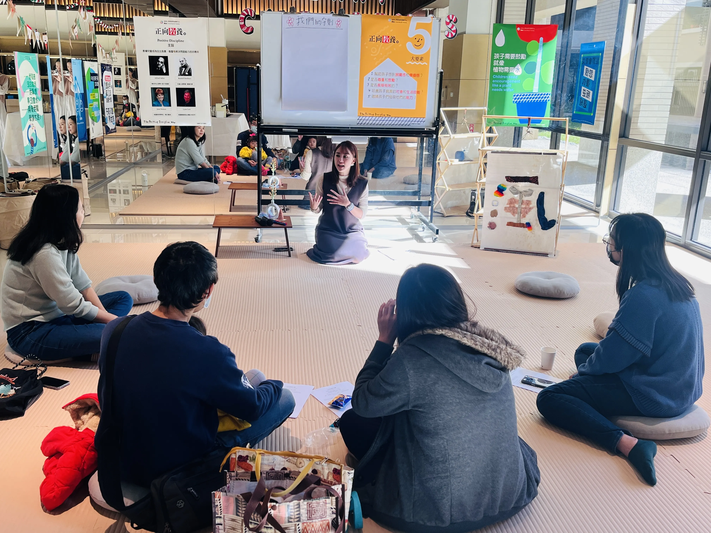
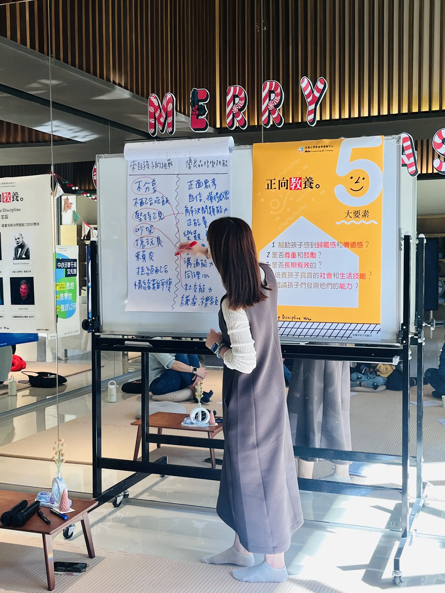
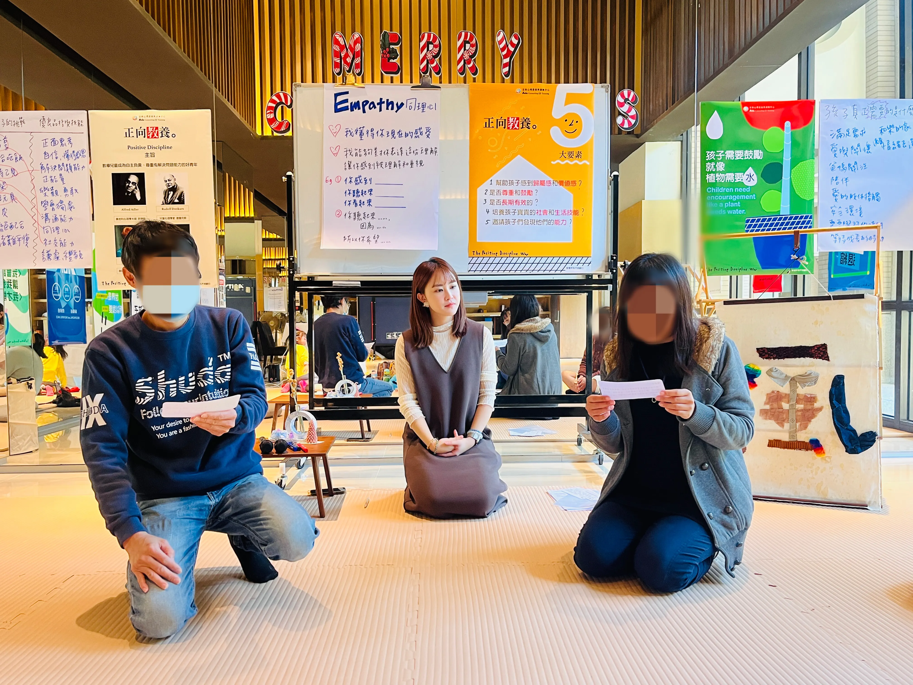
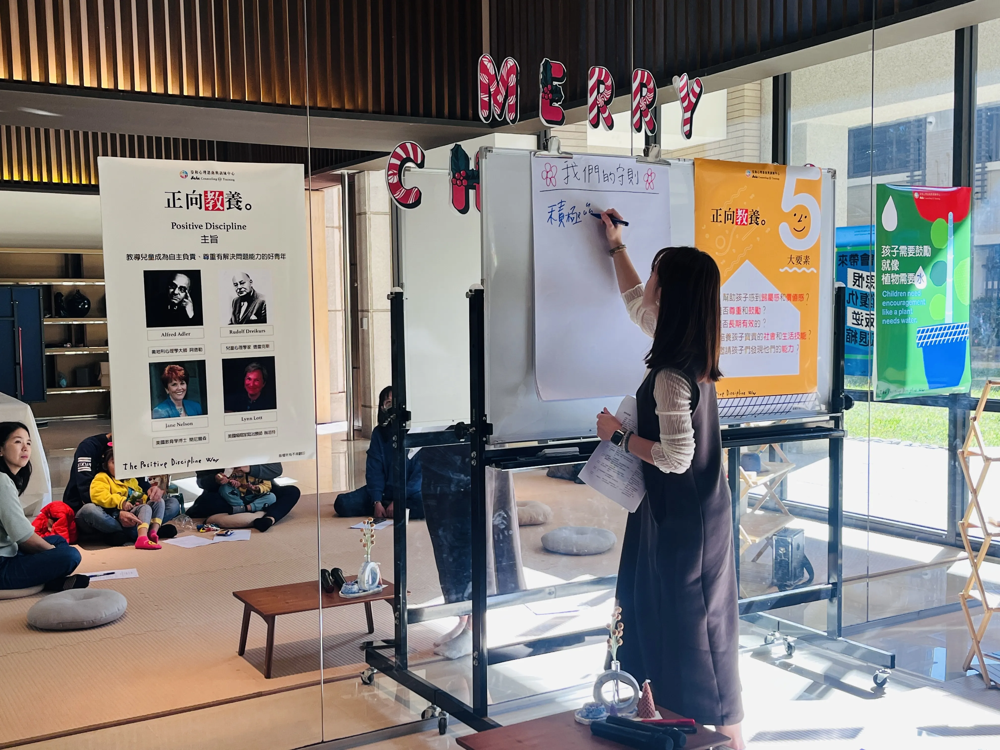

03 / PRACTICE CASE · ADULT LEARNING · FACILITATION
Positive Discipline
starts with understanding.
A two-hour parent workshop designed and facilitated to move beyond “you should listen” and towards noticing what children may be communicating through behaviour.
← Back to selected work
01 / STARTING QUESTIONS
What does positive discipline actually ask of us?
Participants arrived with practical and emotional questions: Is positive discipline unlimited freedom? Does it mean we cannot say no? What should a caregiver do when a child repeatedly does not respond as expected?
Rather than beginning with a list of correct responses, I designed the workshop around the questions caregivers were already carrying.
02 / FACILITATING THROUGH EXPERIENCE
From talking about empathy to feeling the interaction.
I used open questions, small-group discussion and role-play rather than relying only on explanation. Participants took turns playing the caregiver and the child, then reflected on how each position felt.
This made the relationship between adult response and child response more tangible. The aim was not to perform a perfect script, but to notice how tone, expectation and emotion can shape what becomes possible next.

03 / A SHIFT IN PERSPECTIVE
A child may be communicating a need, not choosing to be difficult.
Role-play created the strongest response in the room. Participants described experiencing a child’s position more directly and began to see how adult and child responses influence one another.
The discussion also opened space for an important distinction: positive discipline is not constant positivity. Caregivers can have frustration, limits and difficult emotions. The work is to recognise those emotions, express them without humiliation or threat, and keep the relationship available for repair.
There is no single “right” way to raise every child. Each child brings different needs, traits and ways of responding. The question is how we can keep learning what helps this child feel understood, supported and able to become more fully themselves.

04 / HOLDING THE CAREGIVER TOO
Understanding the child does not mean ignoring the adult.
Many caregivers are not trying to punish children. They are trying to care well without having enough strategies, time or support. I extended the discussion when emotions surfaced and made room for participants to name the difficulty of caregiving.
For me, this is part of positive discipline: not asking adults to perform endless positivity, but helping them find a response that protects both the child’s dignity and the caregiver’s humanity.

TEACHER REFLECTION
One workshop can open a door. It cannot finish the journey.
This experience strengthened my understanding that many caregivers are not choosing harsh responses because they do not care. They are often reaching for the only strategies available to them.
I would keep the role-play and create more opportunities for participants to practise. I would also develop this as a short series, because two hours can begin a shift in perspective but cannot fully support the sustained work of changing everyday interactions.
- Designed and facilitated the full workshop experience independently.
- Translated positive-discipline principles into accessible questions and practice.
- Held space for caregiver emotion while maintaining focus on children’s dignity.
- Used role-play to connect theory with embodied reflection.
Public-facing workshop media is used with permission and avoids identifying children.